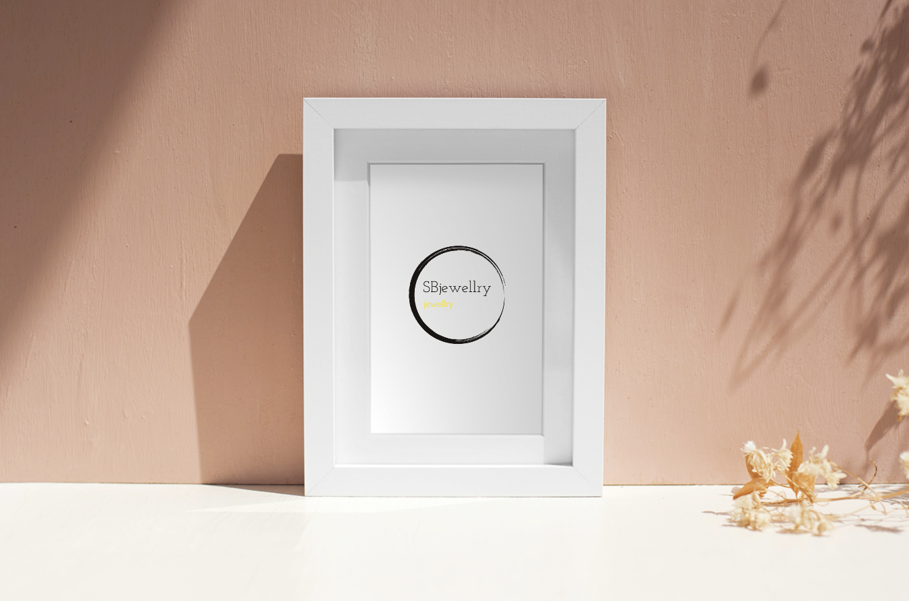

SBjewellery
SB jewellery grundades av Shaima Bodaka.
Verksamheten började redan 2019.
Smycket blev omtyckt och därefter följde fler
modeller. I dagsläget finns ett tjugotal.
Naturligtvis görs även vanliga smycken i
både silver och guld och då alltid med ditt
önskemål som utgångspunkt.
Vi vill att SB jewellery ska
vara en hemsida
där du kan hitta en mängd
snygga smycken. Vi
älskar när smycken blir
till konst. Vi har lång
erfarenhet av smycken och
producering av de.
Det är viktigt för oss att
folk inspireras av
att vara en SB jewellery kund.
Vi på SB jewellery vill att alla våra
kunder är nöjda, det är viktigt för
oss att man är bekväm i de smycken man
har på sig. Våra smycken är orostbara och
vi kan även tillverka en speciell design för
dig om du vill, det är alltså inte bara det
som finns som kan köpas utan även egna designer.